ContainmentBreach
《星空》Creation Kit 生存关卡设计
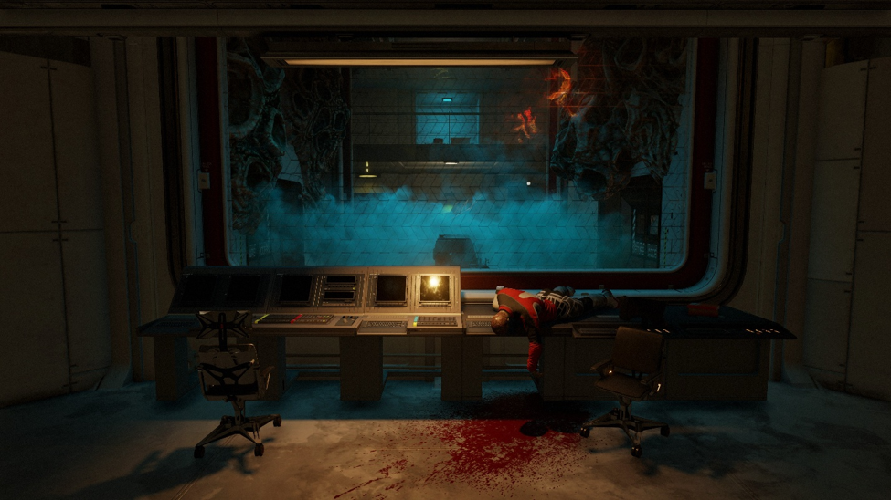
总结
该关卡使用《星空》Creation Kit 搭建，参考《使命召唤》僵尸模式中探索、通电、区域解锁、武器成长与持续生存的核心循环。玩家在通电前主要面对狭窄、受限且高风险的小型环路；通电后，陷阱和更安全的循环路线被激活；开启武器升级通道后，玩家将获得更大的活动空间和更稳定的战斗条件。关卡重点研究环路变化、宽窄空间组合、空间尺度对心理压力的影响、环境视线引导、武器与资源的数值平衡，并通过脚本实现电力、陷阱、区域解锁和升级等系统。
关卡布局

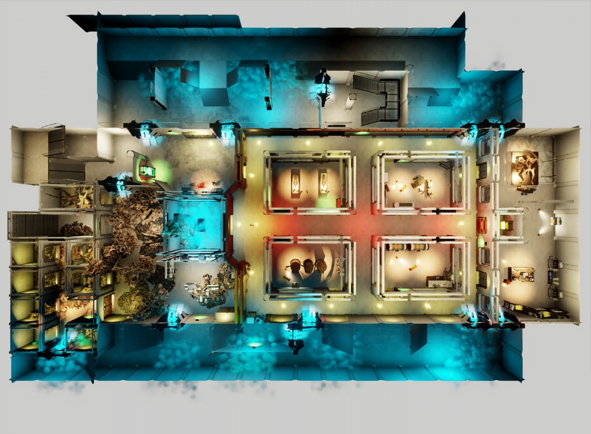
目标 1：如何设计一个驱动玩家探索的地图结构
明确僵尸模式的玩家体验与核心循环
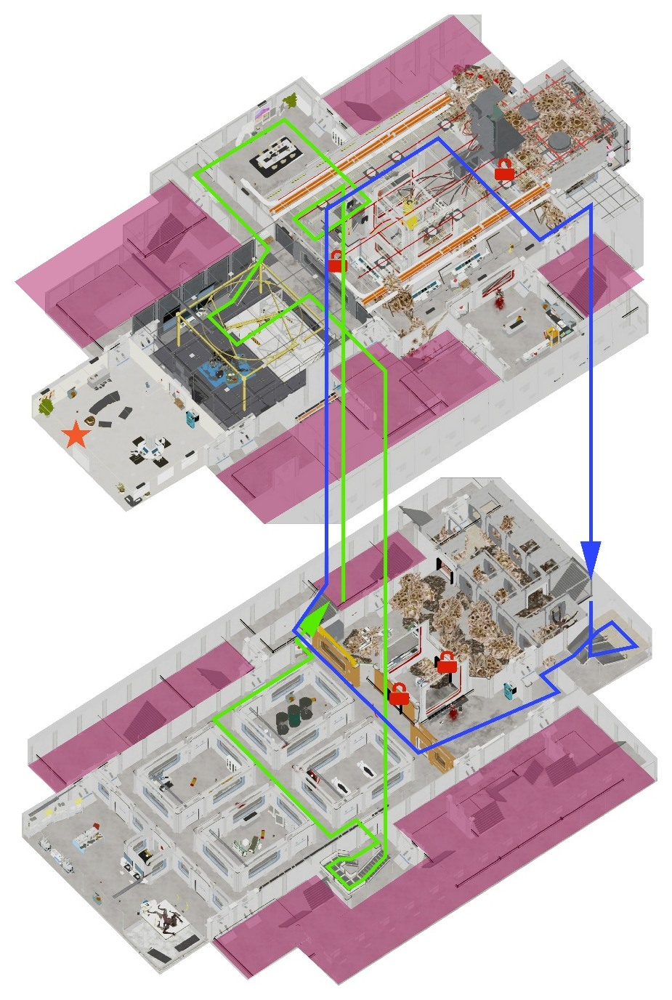
环路在结构上成立，但狭窄出口降低了路线容错率，玩家无法长期稳定使用。
阶段 1：开启电闸之前
在电闸开启前，我有意限制玩家获得稳定环路的能力。初始区域主要由小型环路、单向深入路线和高风险环路组成。部分路线虽然能够形成循环，但其中包含狭窄通道和视线受限的转角，随着敌人数量的增多玩家很容易在入口或转角处被敌人拦截。同时随着敌人的血量增加，前期区域的武器逐渐变弱，促使玩家进入新区域寻找更强的武器。这种设计防止了玩家前期稳定地重复绕圈。玩家需要通过观察敌人位置、判断撤退时间以及寻找新的区域入口维持生存，同时产生寻找电闸和扩大地图的动力。
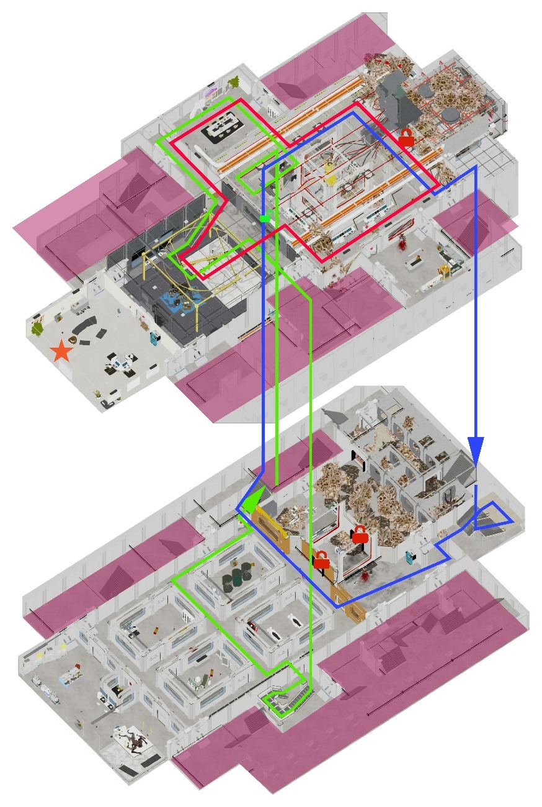
开启电闸后新增了一条环路，将原本两条环路串联起来。
阶段 2：开启电闸之后
开启电闸后，地图从以探索和求生为主的受限结构，转变为能够进行聚怪和路线管理的战斗空间。新的通道将原本分散的局部空间连接起来，形成宽窄交替的主要环路。环路中的宽阔区域为玩家提供观察、聚集敌人和调整方向的空间，狭窄区域则继续保留被拦截的风险。与此同时，陷阱系统被激活，使玩家能够主动规划敌人的移动路线，将空间循环与资源消耗、敌群管理结合起来。饮料机也在电闸开启后被激活，玩家需要去到地图各个角落使用饮料机来强化自身，以应对更高波次。

阶段 3：开启升级武器通道之后
在玩家反复进入危险狭窄的负一层实验室之后，玩家使用收集到的电池开启了通往武器升级机的通道。玩家获得的不只是升级设施，还会解锁连接多个区域的大型环路。与前期局部环路相比，该环路拥有更大的容量和更多路线选择，能够容纳后期数量更高的敌群。我将武器升级与空间扩张设置在同一推进阶段，使玩家的战斗能力和移动能力同步成长。玩家获得更高伤害的同时，也获得了应对更高敌人密度所需要的空间条件，从而让地图成长和数值成长保持一致。同时，4 条环路再次彻底连通，形成一个立体的环路空间，在后续潮水般的虫群涌来之时，为玩家营造夺路而逃的惊险刺激感。

目标 2：如何利用空间比例来带给玩家不同的心理体验与战斗体验
建筑空间的尺度
此处我引入了建筑的空间比例指标，通过控制不同空间的高度与面积比值，营造出不同类型空间的同时，给玩家带来不同心理体验。

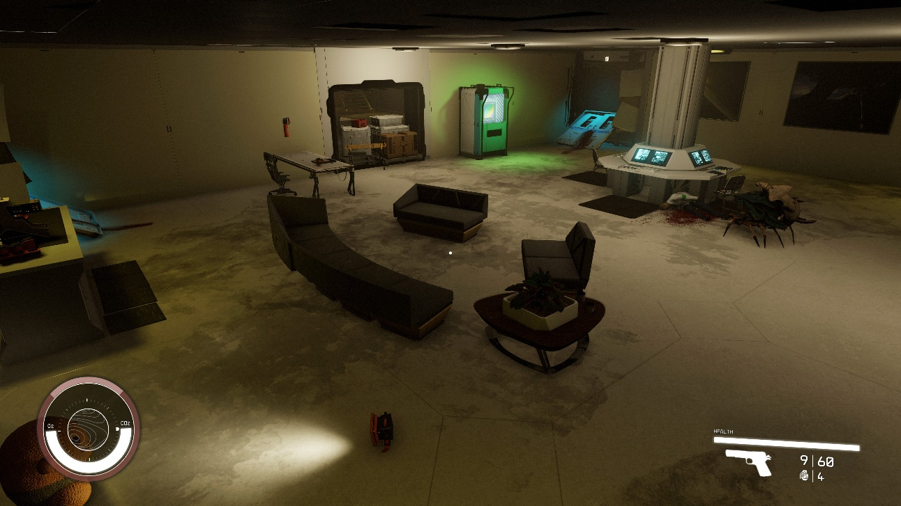
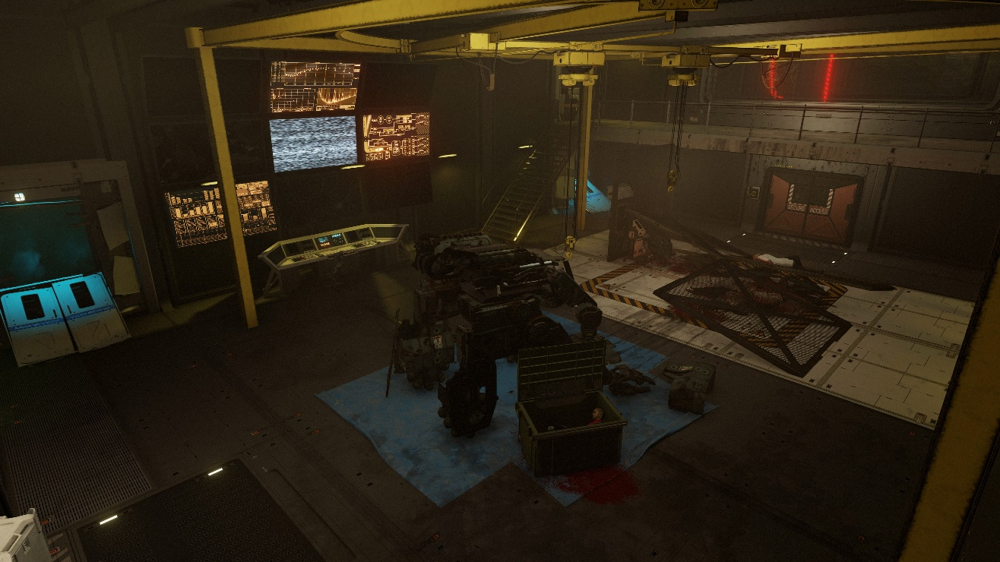
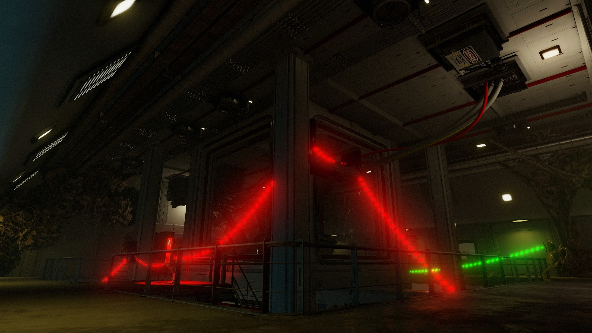

实验舱与虫洞区域
利用高大空间与低矮空间形成尺度失常，使玩家同时感受到未知与不稳定。

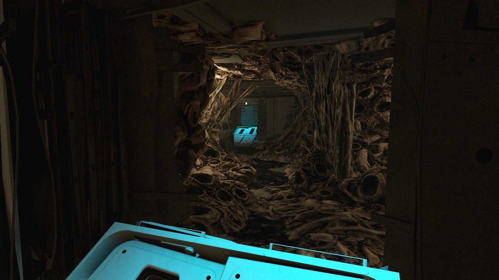
空间氛围营造
布景
- 根据不同区域的功能配置设备、家具、管线与实验设施，建立清晰的空间身份。
- 通过布景密度控制心理压力：开阔区域减少遮挡，狭窄实验室增加设备与障碍，使空间更拥挤、更危险。
- 利用破损、污染和实验痕迹补充环境叙事，暗示实验设施由正常运行逐渐走向失控。

地标
- 在重要节点设置轮廓、尺度或颜色明显的地标，帮助玩家识别当前位置。
- 让地标能够从多个路径被提前看到，为探索提供方向目标。
- 将电闸、实验舱、武器升级区等核心功能塑造成独特地标，使功能识别与路线引导结合。

光影
- 通过明暗对比建立视觉层级，使重要入口、交互设备和前进方向优先被玩家注意。
- 使用不同光照氛围区分区域状态与危险等级。
- 在狭窄区域增加阴影和局部照明，制造未知感；在主要战斗区域扩大可见范围，保证敌人信息的可读性。
- 通过通电前后的灯光变化，为地图状态改变提供明确反馈。
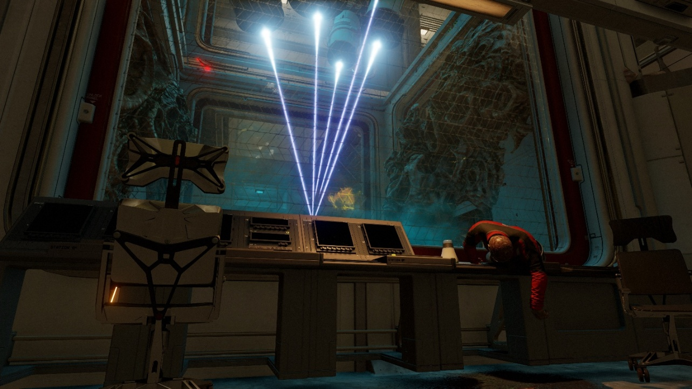
目标 3：布置掩体与房间内路线
环绕空间
将掩体作为房间中心的空间节点，使玩家能够围绕掩体移动，而不是被迫停留在单一位置。
通过掩体与墙体之间的距离控制路线宽度，形成绕行、拉扯和紧急突围的空间。

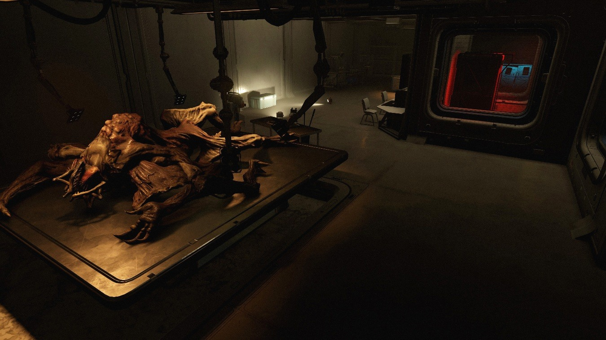
避免掩体形成绝对安全点，使玩家只能短暂阻断视线，仍需持续移动。
十字与 T 字路口
T 字路口提供两个明确方向，适合控制玩家节奏，并通过尽端的地标、武器或设施引导路线选择。
十字路口增加观察方向与路线选择，同时提高被多方向包围的风险，形成更高的信息处理压力。
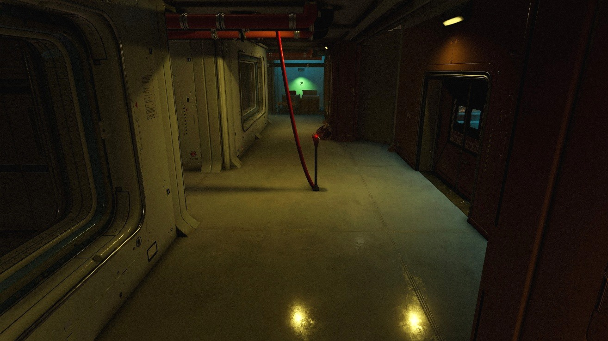

目标 4：如何平衡武器数值
我使用 Excel 计算 TTK、STK、伤害与价格等一系列数值，以确保玩家在逐渐探索的过程中获得更强的武器，并与敌人逐渐增加的血量相匹配。
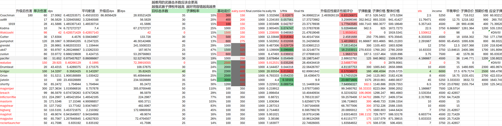